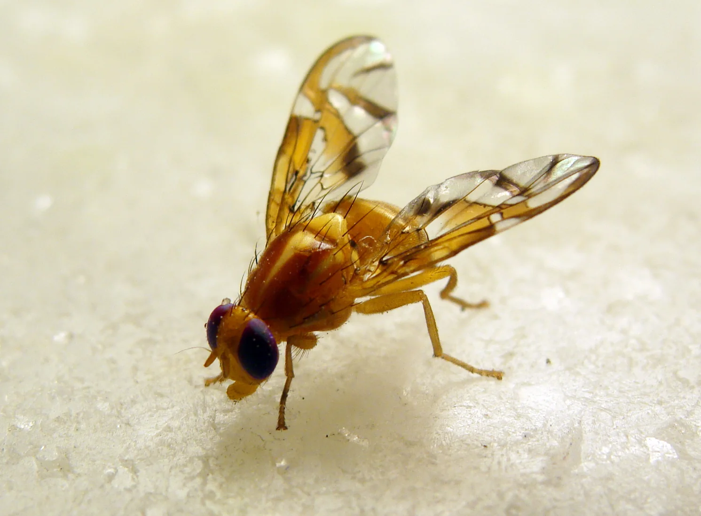
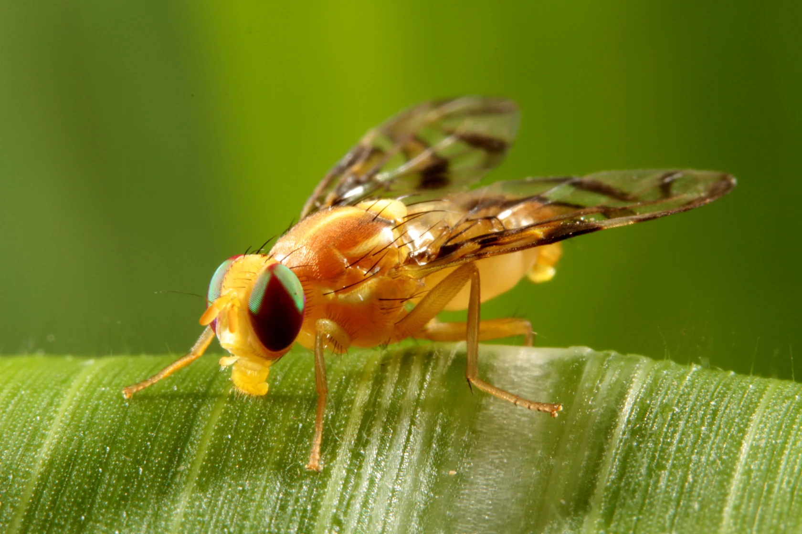
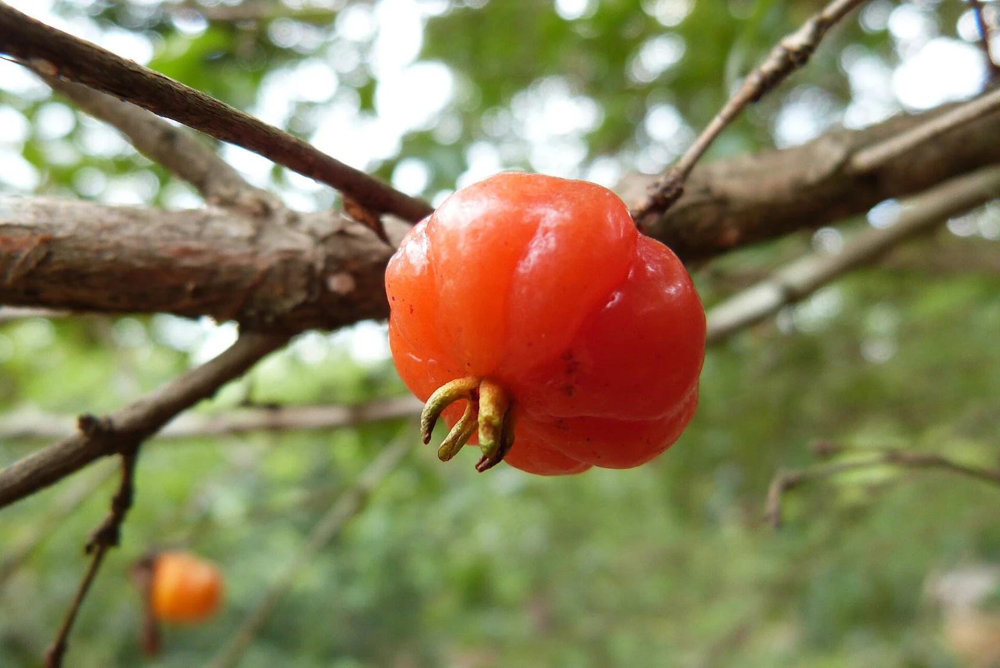
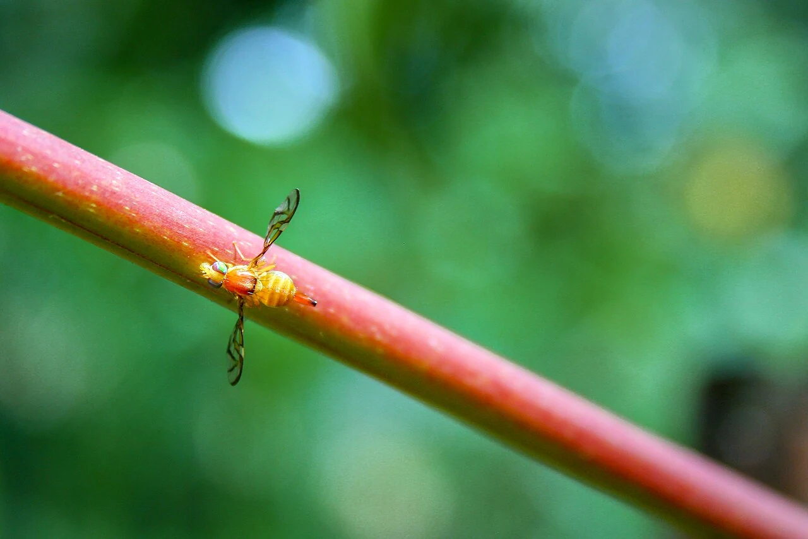
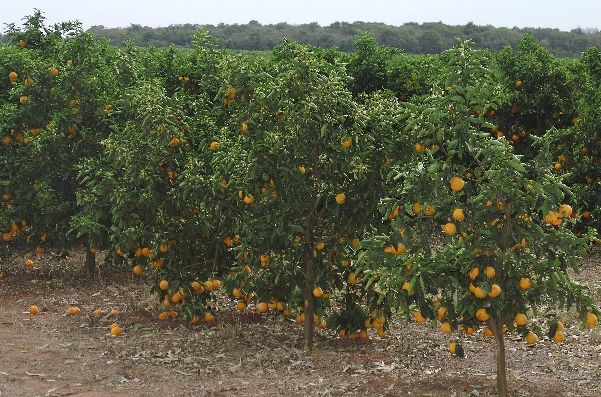
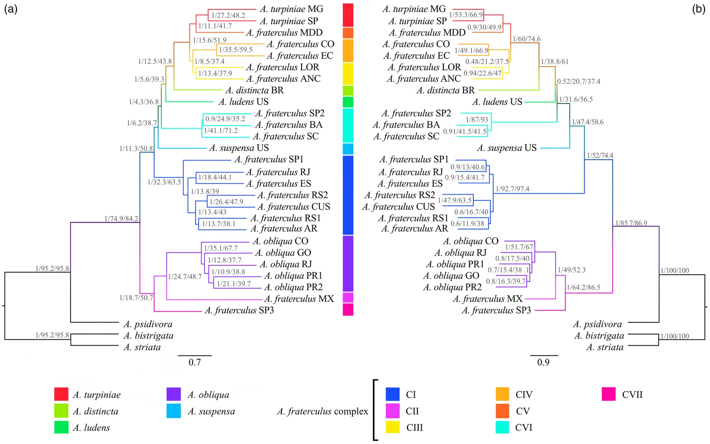

Population Genetics and Evolution Laboratory
Welcome to the Population Genetics and Evolution Laboratory (LaBEv), coordinated by Prof. Reinaldo Brito, based out of the Department of Genetics and Evolution at the Federal University of São Carlos.
We are broadly interested in fruit fly (mainly from the Anastrepha genus) speciation and systematics and use an integrative approach to study these phenomena, using a range of different methods, such as phylogenomics, epigenetics, microbiome and circadian cycle studies, with a large emphasis on genomic approaches. See Research to learn more about what we do.





Research
Our group has been working on the genetic architecture and evolution of complex traits, particularly at the speciation boundaries. Our interests range from evolutionary to population and quantitative genetics and genomics to study the process of differentiation and species formation, even in the presence of continuous gene flow and adaptation. We are using population genomic and epigenomic tools to identify evolutionary forces affecting regions on the genome involved with species and population differentiation, with a greater focus on Tephritidae, but also on other insects.
Differentiation and Speciation in Anastrepha
We have been investigating population genomics and speciation processes in one of the main agricultural pests in South America, fruit flies of the species group Anastrepha fraterculus. This species group is riddled with recently diverged species, some of which are hard to differentiate. We have been using genomics and transcriptomics to identify phylogenetically informative regions on the genome at the species level, as well as at higher level in Anastrepha.
We are extending these to help investigate local adaptation and differentiation across Brazil, hoping that it could help us understand better the forces shaping their differentiation, but also to identify a set of informative markers that could be useful for taxonomical identification of species in this genus. Because these processes may have been shaped by their adaptation to different hosts and environments, we are also investigating the role of epigenetic markers and microbiomes have had on their differentiation.


Publications
Explore the lab’s research publications on the Google Scholar profile of our principal investigator, Reinaldo Alves de Brito.
People
Are you a lab member?
Interested in joining us?
We always look forward to talking to people interested in our research. I should mention that I am currently associated with the Graduate Program in Genetics of Ribeirão Preto Faculty of Medicine – USP.
Send us an email or a note in the other available channels if you're interested in joining our research group.
Group Photos
The Anastrepha working group meeting and February 2023 lab visit photos are from the Dupuis Lab.
Get in touch
brito@ufscar.br +55 16 3351-8377 @labev_ufscarAddress
Departamento de Genética e Evolução Universidade Federal de São Carlos Rodovia Washington Luís, km 23513565-905 · São Carlos, SP, Brazil